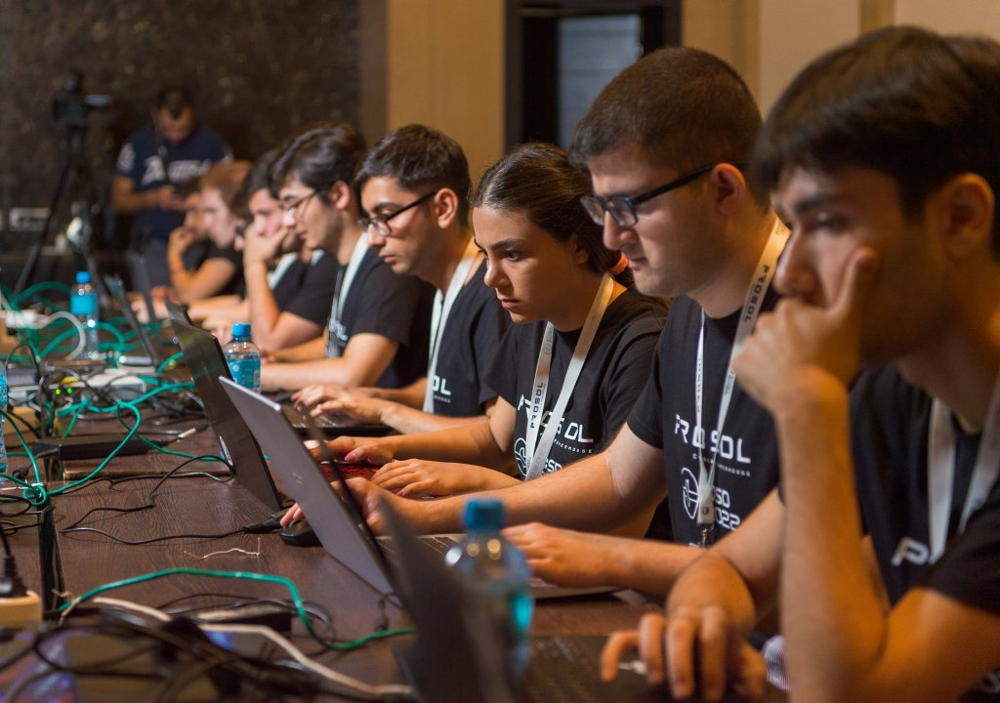

Alexandra Michales
@amichaels
- GRC
- Pentest & Red Team
- OSINT
- Sécurité Opérationnelle
Qui suis-je ?
Alternante en Sécurité Opérationnelle chez CCC et M2 SSI à SSS,
j'aime comprendre comment les choses fonctionnent et comment
elles peuvent être détournées. Depuis que j'ai regardé The Net (1995), la curiosité est restée
et ça m'a influencé dans mon intérêt pour l'OSINT, la GRC ou encore la sécurité offensive.
On me voit rarement sans une tasse de thé à la main et très souvent entrain de réflechir sur
comment casser un nouvel environnement et donc mieux le protéger.
